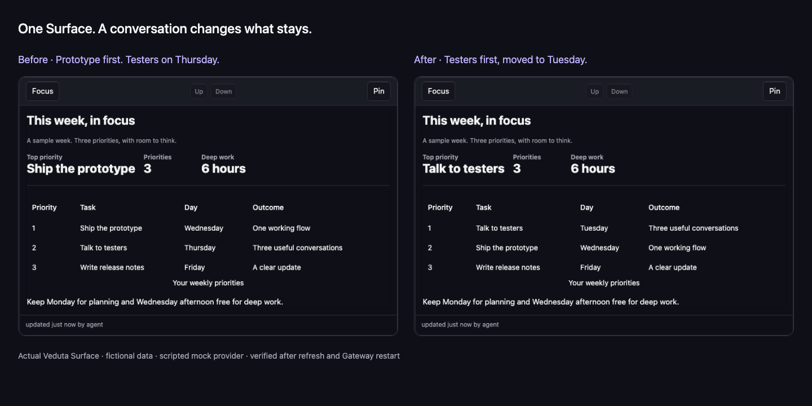

Your work stays visible.
A conversation can become a Surface: a plan, a tracker or a list that keeps its state after you close the page.
An open-source personal AI Agent that turns conversations into persistent, living interfaces. Plans, trackers and ongoing work, ready when you return.
A conversation can become a Surface: a plan, a tracker or a list that keeps its state after you close the page.
Keep Work, Health and Home together without mixing their context. Talk to one Agent to create and update their Surfaces.
Run Veduta on your own machine. Connect your chosen model, and confirm Automations for recurring work.
In this demo, a weekly plan becomes something you can return to. A follow-up changes the same Surface. Refresh the page and the change is still there.
Make the change yourself
Veduta is early alpha software. Expect rough edges and keep backups. The software is MIT licensed; you pay for your hosting and any model usage or subscription.
Model connections support Anthropic, OpenAI and OpenRouter API keys, plus a ChatGPT subscription through managed Codex authorization. Claude subscription access is currently unavailable.
The public tour runs entirely in your browser, with sample prompts and local storage. It demonstrates the interface and browser persistence. The video uses the real Gateway to demonstrate saved Surfaces. Try the Local VPS profile to evaluate passkeys, onboarding and a real Model connection.
Read the current capabilities and limitationsStart without a VPS or API key. Self-host when you are ready. Help shape what comes next by testing one real use case.
The mock provider uses fixed responses. No real model, personal data or external account appears in the recording.